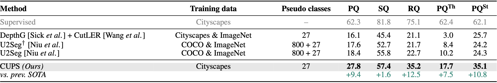
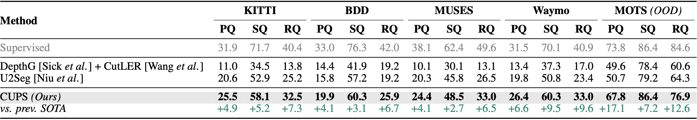

TL;DR: We present CUPS, a Scene-Centric Unsupervised Panoptic Segmentation method leveraging motion and depth from stereo pairs to generate pseudo-labels. Using these labels, we train a monocular panoptic network, achieving state-of-the-art results across multiple scene-centric benchmarks.
Unsupervised panoptic segmentation aims to partition an image into semantically meaningful regions and distinct object instances without training on manually annotated data. In contrast to prior work on unsupervised panoptic scene understanding, we eliminate the need for object-centric training data, enabling the unsupervised understanding of complex scenes. To that end, we present the first unsupervised panoptic method that directly trains on scene-centric imagery. In particular, we propose an approach to obtain high-resolution panoptic pseudo labels on complex scene-centric data combining visual representations, depth, and motion cues. Utilizing both pseudo-label training and a panoptic self-training strategy yields a novel approach that accurately predicts panoptic segmentation of complex scenes without requiring any human annotations. Our approach significantly improves panoptic quality, e.g., surpassing the recent state of the art in unsupervised panoptic segmentation on Cityscapes by 9.4% points in PQ.
We propose CUPS, an unsupervised panoptic segmentation framework leveraging stereo video for pseudo-labeling while training and inferring on monocular images. Our pipeline consists of pseudo-label generation, panoptic network bootstrapping, and self-training. Pseudo-Label Generation: We obtain semantic pseudo labels via a DINO-based semantic network with depth-guided inference. Instance pseudo labels are extracted using SF2SE3 motion segmentation from scene flow. Both labels are fused into panoptic pseudo labels. Training and Self-Training: The network is trained on pseudo labels with copy-paste augmentation. Self-training refines predictions via a momentum network, aligning and filtering augmented outputs into self-labels. CUPS integrates semantic-depth fusion, motion-based instance segmentation, and self-training, achieving fully unsupervised panoptic segmentation.
Unsupervised panoptic segmentation on Cityscapes val. Comparing CUPS to existing unsupervised panoptic methods, using PQ, SQ, and RQ, as well the PQ for “thing” and “stuff” classes (all in %). † denotes results reported by U2Seg. CUPS significantly outperforms the baseline and U2Seg.
Comparing CUPS with unsupervised panoptic segmentation methods, using PQ, SQ, and RQ (in %) in terms of generalization to KITTI panoptic, BDD, MUSES, and Waymo. In addition, we analyze generalization to the OOD dataset MOTS. CUPS maintains strong panoptic segmentation accuracy under domain shift, unlike the supervised baseline, which suffers a significant accuracy drop. This highlights the generalization advantage of unsupervised approaches. CUPS achieves outstanding panoptic segmentation accuracy, substantially surpassing the baseline and U2Seg.
We compare CUPS to the previous state of the art approach U2Seg, across various scene-centric datasets. CUPS predicts noticeably less noisy and more accurate semantics, aligning well with the image while predicting significantly more and better instance masks.
@inproceedings{Hahn:2025:UPS,
title = {Scene-Centric Unsupervised Panoptic Segmentation},
author = {Oliver Hahn and Christoph Reich and Nikita Araslanov and Daniel Cremers and Christian Rupprecht and Stefan Roth},
booktitle = {Proceedings of the IEEE/CVF Conference on Computer Vision and Pattern Recognition (CVPR)},
year = {2025},
}
Acknowledgments: This project was partially supported by the European Research Council (ERC) Advanced Grant SIMULACRON, DFG project CR 250/26-1 ``4D-YouTube'', and GNI Project ``AICC''. This project has also received funding from the ERC under the European Union’s Horizon 2020 research and innovation programme (grant agreement No. 866008). Additionally, this work has further been co-funded by the LOEWE initiative (Hesse, Germany) within the emergenCITY center [LOEWE/1/12/519/03/05.001(0016)/72] and by the State of Hesse through the cluster project ``The Adaptive Mind (TAM)''. Christoph Reich is supported by the Konrad Zuse School of Excellence in Learning and Intelligent Systems (ELIZA) through the DAAD programme Konrad Zuse Schools of Excellence in Artificial Intelligence, sponsored by the Federal Ministry of Education and Research. Finally, we acknowledge the support of the European Laboratory for Learning and Intelligent Systems (ELLIS) and thank Simone Schaub-Meyer and Leonhard Sommer for insightful discussions.